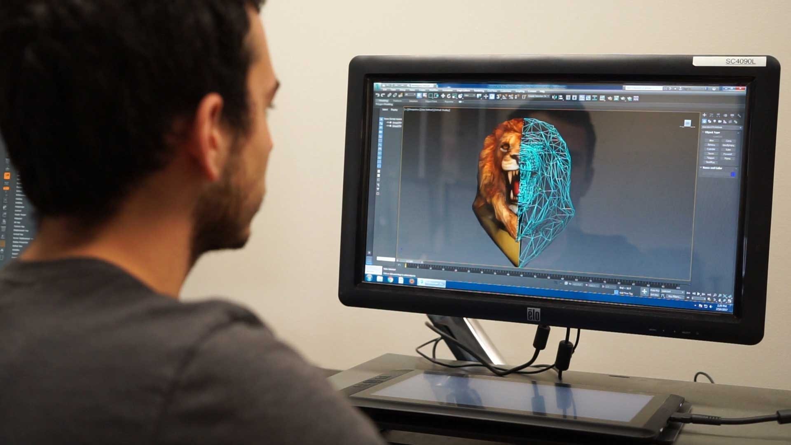
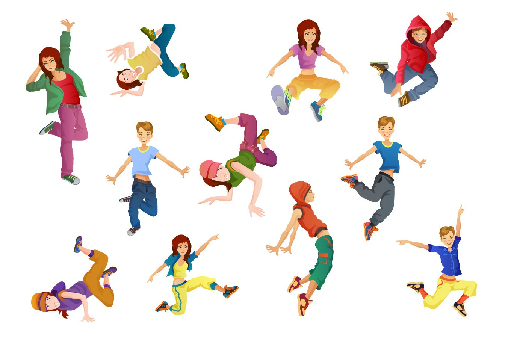

Why New Media Technology?

Upon my arrival in CUNY LaGuardia Community College, I didn't really know what major I wanted to do. So my ASAP advisor told me that i should start off with my major as Liberal Arts to give me time to think about what I really wanted to pursue.
After the Spring I semister, I wanted to do Computer Science because I had read online in order to become a game designer you must contain a computer science degree. Then my advisotr asked if I even like math... the basic answer is NO. So he recommended New Media Technology: Game Development track to me and I was interested. Better than dealing with that math hell.
What First Interest You To Do Game Design?
I actually wanted to become a backup dancer, the ones that dances on stage and in music videos. I still want to become a dancer and trying to pursue in it but I needed a backup plan incase dancing don't workout for me. So my other interest is to become a game designer because I also love to draw(not as much due to a serve mentall issue that I still battle with). Plus my older brother got me into video games more at the age of 7 years old. So I chose my degree of Game Design first then eventually getting my degree for dance.
Major Track Forced Change
As I said earlier, my major track is game development while was game development.
Unfortunately, the New Media Technology: Game Development track gotten phased out due to the lack of interest towards students. My current track is now Digital Media track. Althrough digital media doesn't have the MAC courses, it still has some courses that contains game development.